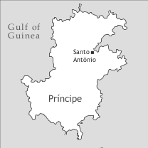

by Philippe Maurer

Principense (autoglossonym: lung’Ie, literally ‘the language of the Island’, Ie being the native designation of Príncipe) is spoken in the Gulf of Guinea, West Africa, on the island of Príncipe, which has approximately 7,000 inhabitants (2007 estimate). Together with the island of São Tomé, Príncipe forms the Democratic Republic of São Tomé and Príncipe. Principense is an endangered language; my estimate is that there are less than one hundred native speakers left who have a good active command of the language. These native speakers live on Príncipe, on São Tomé, and in Portugal.
The official language of São Tomé and Príncipe is Portuguese, which all native speakers of Principense speak actively. Besides Portuguese, Cape Verdean Creole plays a major role on Príncipe because it is the mother tongue of 50% or more of the inhabitants of Príncipe. Cape Verdean Creole is a language which parents transmit to their children; this is not the case with Principense. (On Cape Verdean Creole, see Baptista (2013), Lang (2013) and Swolkien (2013) in this volume.)
The first known document of the language is a manuscript written in 1888 by Ribeiro, which, although very limited, contains some interesting information about an earlier stage of the language; this manuscript constituted the base of Schuchardt’s (1889) article, which was the first printed article on Principense. The next publication was Günther’s (1973) grammar of Principense, and the most recent one is Maurer (2009).
The islands of Príncipe and São Tomé were uninhabited when they were discovered by the Portuguese around 1470. São Tomé was populated almost immediately with the following groups: Free Portuguese settlers, deported Portuguese prisoners, some free Africans, 2,000 deported Jewish children under the age of eight from Spain, and African slaves. Príncipe was populated by people from São Tomé around 1500; however, besides free Portuguese and African slaves, it is not clear whether there were representatives from the other groups living on São Tomé.
Principense probably developed from an early variety of Santome, the main creole language spoken on the island of São Tomé (see Hagemeijer (2013), this volume). It shares many grammatical structures and an important part of its vocabulary with this language (as well as with the other two Portuguese-based creoles of the Gulf of Guinea, Angolar and Fa d’Ambô; see Maurer (2013a) and Post (2013), both this volume). The slave population came chiefly from Nigeria and the Congo area. It is the Nigerian languages which most influenced Principense. From a sample of some 1,650 lexical items, 90% are of Portuguese origin, 6% of Nigerian origin, mostly from the Edoid subgroup of Benue-Congo, and 1% of Kikongo origin; the origin of the remaining items has not yet been established.1 Principense shares only a small part of its lexicon of Nigerian and Congolese origin with Santome. However, since little is known about the social history of Príncipe, it is difficult to say at which stage the African lexicon was retained or incorporated into the language.
As already mentioned, Principense is currently spoken by less than 100 people, mostly over 60 years old. In my view, the obsolescence of the language has its roots in a sleeping sickness epidemic around 1900 which, according to Günther’s (1973: 12f) sources, only 300 people survived. This led the Portuguese colonial authorities to import indentured labourers from their African colonies Angola, Mozambique, and particularly from Cape Verde. Another reason for the obsolescence of the language is the lack of interest the native speakers had in giving access to their language to the immigrants, who soon outnumbered them. A final reason for the obsolescence of Principense is the fact that over the last four or five generations, many speakers have stopped transmitting their language to their children, forbidding them to use it, so that at school the children would perform better in Portuguese.
Most native speakers of Principense are at least trilingual (Principense, Santome, and Portuguese); many also speak Cape Verdean Creole. Principense is rarely used in daily communication; this is only the case when old people meet. It is almost impossible to hear Principense in the streets of the capital of the island, Santo António.
There are some efforts being made to preserve the language by way of radio broadcasts in and about the language two or three times a week and by way of daily news on the radio. The government intends to create and officialize a spelling system for the three creole languages spoken in São Tomé and Príncipe, but no effort has been made to standardize the grammar and the lexicon.
Principense has a system of seven oral vowel phonemes which all have a nasal counterpart. The nasals, however, are realized exclusively as nasals only in word-final position; in word-internal position, they can be realized (a) as oral vowels followed by a nasal consonant, (b) as nasal vowels followed by a nasal consonant, or (c) as nasal vowels, as in umpan ‘bread’, which can be realized as [ùmpá̰], [ṵ̀mpá̰], or [ṵ̀pá̰].3 Minimal pairs opposing oral with nasal vowels are rare: fya /fjá/ ‘market’ vs. fyan /fjá̰/ ‘wheat flour’. Besides the oral and nasal vowels, Principense has two syllabic nasals, which are rare, as in m’baka ‘machete’ or n’têw ‘burial’.
|
Table 2. Consonants |
||||||||
|
bilabial |
labio-dental |
labio-velar |
alveolar |
post-alveolar |
palatal |
velar |
||
|
plosive |
voiceless |
p |
k͡p |
t |
k |
|||
|
voiced |
g͡b |
g |
||||||
|
implosive |
ɓ <b> |
ɗ <d> |
||||||
|
nasal |
m |
n |
ɲ <nh> |
ŋ <n> |
||||
|
trill |
r |
|||||||
|
fricative |
voiceless |
f |
s |
ʃ <x> |
||||
|
voiced |
v |
z |
ʒ <j> |
|||||
|
affricate |
voiceless |
tʃ <tx> |
||||||
|
lateral |
l |
ʎ <lh> |
||||||
|
glide |
w |
j <y>/ ȷ̃ <nh> |
||||||
There are 22 consonants and 3 glides in Principense, of which s/ʃ and z/ʒ are in complementary distribution: ʃ and ʒ appear before i; s and z before the other vowels: xinku ‘five’ (< Portuguese cinco) vs. usuva ‘rain’ (< Portuguese chuva). The labiovelars are relatively rare (between 30 and 40 lexical items); the following minimal pair shows them in contrast: ugbami ‘chin’ vs. ukpami ‘traditional fish dryer (frame)’. The phoneme ʎ is also marginal.
Principense is a tone language with two tones, high and low (or unspecified). As in many tone languages with two tones, the realization of the tones is variable, i.e. depending on tone sandhi rules. A frame in which all the logically possible tonal patterns of disyllabic nouns appear is one in which the noun is located in subject position, followed by the habitual or future marker ka, which modifies the following verb, e.g. ka kume ‘will eat’. In such a frame, kobo ‘snake’ is realized HH, pôkô ‘pig’ HL, arê ‘king’ LL and kasô ‘dog’ LH.
The syllable structure is either V or CV or a combination of this up to five syllables. Vowels in hiatus are rare; but in some cases, a sequence of two different or two identical vowels can occur. Here are some examples of words with three to five syllables: u-a-ri V-V-CV ‘air’, kô-ô-su CV-V-CV ‘stone (of fruit)’, u-gbô-gô-dô V-CV-CV-CV ‘valley, precipice’, a-li-fan-di-ga V-CV-CV-CV-CV ‘customs’, pu-lu-mu-ni-a CV-CV-CV-CV-V ‘pneumonia’.
The noun is invariable. Natural gender is usually distinguished by different words, as in mwin ‘mother’ vs. pwe ‘father’, or by mye ‘woman’ and omi ‘man’ following the noun, as in kaba omi ‘he-goat’ vs. kaba mye ‘she-goat’.
Number is expressed by the preposed pronoun of the third person plural ine ‘they’, as in ine mye ‘the women’. If the noun is inanimate, it must be marked as definite to be modified by ine, e.g. by the use of the postnominal demonstrative sê ‘this’, as in ine laanza sê ‘these oranges’; *ine laanza is not grammatical.
Diminutives are formed with minu ‘child, girl’, as in minu jinela ‘small window’, and augmentatives with mwin ‘mother’ or pwe ‘father’, as in mwin vapô ũa [mother ship indef.art] ‘a big ship’, or pwe livu ũa [father book indef.art] ‘a thick book’.
There is no definite article; the indefinite article, which follows the noun, is identical to the numeral ũa ‘one’: dya ũa ‘one day’.
Generic noun phrases are expressed as zero-marked noun phrases, as in (1).
(1) Liman ka twa.
lemon hab be.bitter
‘Lemons are bitter.’ (Maurer 2009: 103)
The adnominal demonstratives sê ‘this’ and (i)xila ‘that’ exhibit a distance contrast, whereas xi modifies nouns which refer to entities that are out of sight. The corresponding pronominal demonstratives are isê, ixila, and ixi.
Adnominal possessives follow the noun, as in kaxi me ‘my house’; the paradigm of the adnominal possessives appears together with the personal pronouns in Table 4.
Pronominal possessives are formed with the possessive noun ki (which is unanalyzable) and the adnominal possessives, as in (2).
(2) Kaxi sê ki tê.
house dem poss poss.2sg
‘This house is mine.’ (Maurer 2009: 39)
The numerals used nowadays are all of Portuguese origin. Formerly, they all followed the noun, but now they all precede the noun, except for ũa ‘one’, which also functions as the indefinite article (kaxi ũa ‘one/a house’, dôsu kaxi ‘two houses’).
1 ũa 2 dôsu 3 têêxi 4 kwatu 5 xinku 6 sêy
7 setxi 8 wêtu 9 nove 10 dexi 11 onji 12 dôzê
13 trêzê 14 katôzê 15 kinji 16 dizasêy 17 dizasetxi
18 dizawêtu 19 dizanove 20 vintxi
Except for some very rare cases, adjectives are invariant and follow the noun, as in omi ũa ve [man one old] ‘an old man’. The comparison of adjectives is formed as shown in Table 3 (see also Maurer 2009: 48f).
|
Table 3. Comparison of adjectives |
||
|
construction |
examples |
|
|
comparative of equality |
mo ‘manner’ |
Kaxi me gaani mo kaxi tê. house my big manner house your ‘My house is as big as your house.’ |
|
minda ‘measure’ |
Kaxi me gaani minda kaxi tê. house my big measure house your ‘My house is as big as your house.’ |
|
|
comparative of superiority |
maxi … dêkê/dôkê |
Kaxi me maxi gaani dêkê/dôkê kaxi tê. house my more big than house your ‘My house is bigger than your house.’ |
|
pasa ‘to pass’ |
Txi gôdô pasa mi. you fat to.pass me ‘You are fatter than I am.’ |
|
|
maxi … pasa |
Txi maxi gôdô pasa mi. you more fat to.pass me ‘You are fatter than I am.’ |
|
|
superlative |
maxi … dêkê/dôkê N tudu ‘more … than N all’ |
Kaxi sê ê maxi tamwin dêkê kaxi tudu pe. house this it more big than house all ideo ‘This house is the biggest.’ |
|
maxi … na udêntu N ‘more … in interior N’ |
Ê maxi kitxi na udêntu ine. he more small in interior they ‘He is the shortest of all of them.’ |
|
Dependent, independent personal pronouns and adnominal possessives differ only in the singular, as shown in Table 4.
|
Table 4. Personal pronouns and adnominal possessives |
||||
|
dependent pronouns |
independent pronouns |
adnominal possessives |
||
|
subject |
object |
|||
|
1sg |
in ~ un ~ n ~ m |
mi ~ n |
ami |
me |
|
2sg |
txi |
txi |
atxi |
tê |
|
3sg |
ê |
li~e |
êli |
sê |
|
1pl |
no ~ non |
no ~ non |
no ~ non |
no ~ non |
|
2pl |
owo |
owo |
owo |
owo |
|
3pl |
ine ~ ina |
ine ~ ina |
ine ~ ina |
ine ~ ina |
|
indf |
a |
|||
Subject and object pronouns are partially differentiated only in the first and third person singular. The adnominal possessives differ from the personal pronouns only in the singular.
The form ina for the third person plural pronoun and possessive is an old form which is obsolete nowadays.
The indefinite pronoun a is only used as a subject pronoun. It may have an indefinite referent (as in 3), but may also replace a definite third person singular or plural subject (as in 4):
Subject pronouns are obligatory, but object pronouns are not always used, as in the following example:
(5) N daka Ø ô n daka Ø fa?
1sg bring Ø or 1sg bring Ø neg
‘Did I bring her [= the queen] back, yes or no?’ (Maurer 2009: 160)
When both the direct and the indirect object are pronominalized, the indirect object precedes the direct object:
Principense has three overt tense, aspect, and mood markers (ka, sa, and tava) as well as a zero marker; the following five combinations are possible: tava ka, tava sa, ka sa, ka tava and ka tava sa. For the functional analysis of the markers, three lexical aspects (or aktionsarten) must be distinguished: Dynamic verbs, type-1 statives (i.e. statives which are zero-marked for present reference), and type-2 statives (i.e. statives which are marked by ka for present reference). The functions of these markers and their combinations are summarized in Table 5.
|
Table 5. Tense-Aspect-Mood markers |
|||
|
lexical aspect |
tense/aspect |
mood |
|
|
Ø |
type-1 statives |
simple present, habitual present |
|
|
dynamic verbs, type-2 statives |
perfective past, past-before-past |
||
|
ka ~ a |
all |
future in affirmative sentences |
counterfactual |
|
dynamic verbs |
habitual/generic present in affirmative sentences |
||
|
type-2 statives |
simple present in affirmative sentences habitual present in affirmative sentences |
||
|
sa ~ a |
dynamic verbs |
progressive present |
|
|
all |
instead of ka in negated sentences |
||
|
tava |
type-1 statives |
simple past |
|
|
dynamic verbs |
past-before-past, perfective past |
||
|
tava ka ~ a |
dynamic verbs |
habitual past |
|
|
type-2 statives |
simple past, habitual past |
||
|
tava sa ~ a |
dynamic verbs |
progressive past |
|
|
ka sa ~ a |
dynamic verbs |
habitual progressive present |
|
|
ka tava |
all |
counterfactual (past, present, future) |
|
|
ka tava sa ~ a |
dynamic verbs |
progressive counterfactual |
|
Both sa and ka have an allomorph a. This leads to a certain functional confusion in the sense that sa may take over functions which are normally expressed by ka, especially the habitual function.
The combinations ka tava and ka tava sa are only used in counterfactual sentences:
Except for some specific contexts like counterfactual sentences, ka may not occur in negated sentences; it must be replaced by sa:
(9)a. Amanhan n sa kume fa.
b. *Amanhan n ka kume fa.
tomorrow 1sg fut eat neg
‘Tomorrow I won’t eat.’ (Maurer 2009: 83)
The fact that sa obligatorily replaces ka in negated sentences reinforces the confusion between these two markers mentioned above.
Principense has two verb phrase negators: fa (as in examples 9 and 10) and na (as in example 11). Fa is located in verb-phrase-final position, whereas na immediately precedes the tense, aspect, and mood markers. The two negators are in complementary distribution: na occurs only in purposive and desiderative pa-clauses (cf. ex. 11), whereas fa appears in all other contexts.
In example (10), fa negates the verb of the main clause munda ‘to change’, whereas in example (11), na negates the verb of the purposive clause vê ‘see’.
The fact that, in contrast to the other Gulf of Guinea Creoles, Principense has no double negation like Santome na … fa is probably due to the existence of the validator na (epistemic modality) in Principense, which has the same shape and the same position as the negator na, namely immediately preceding the tense, aspect, and mood markers:
There are five modal verbs or verbal expressions that refer to ability, to deontic as well as to epistemic modality, as in Table 6.
|
Table 6. Modal verbs and verbal expressions |
|||
|
ability |
deontic modality |
epistemic modality |
|
|
obligation |
tê di ‘have to’ |
||
|
necessity |
xya pa ‘it is necessary that’ divya/pudya ‘should’ |
divya/pudya ‘must’ |
|
|
possibility |
po ‘can’ sêbê ‘can’ |
po ‘can’ |
ê ka po sa ya [expl ipfv can cop comp] ‘it could be that’ |
The verb po ‘can’ expresses ability as well as deontic possibility; the difference between the two functions is rendered by the different tense and aspect markers. In the case of deontic possibility (cf. 13), the verb is zero-marked for present reference, whereas if po refers to ability, the verb is marked by ka (cf. 14):
(13) “N sa ke lega uman za o.”– “Txi po lega.”
1sg prog ipfv.go let hand already val 2sg can let
‘I will open my arms now.’ – ‘You may do so.’ (Maurer 2009: 106) (deontic possibility)
(Maurer 2009: 106) (physical participant-internal ability)
Mental participant-internal ability is expressed by the verb sêbê ‘know’:
(15) N sêbê landa fa.
1sg know swim neg
‘I cannot swim.’ (Own fieldwork, 2004)
The verbs divya/pudya may express deontic (cf. 16) as well as epistemic necessity (cf. 17); it is the context which decides what function the modal verbs have:
(16) Ê bê pudya/divya ka tê pene sê.
3sg also should mod have pity poss.3sg
‘He should have pity for him.’ (Maurer 2009: 106)
Volition is expressed by mêsê ~ mêê ‘to want’:
(18) M mêê pa txi fêê kwisê.
1sg want comp 2sg do this
‘I want you to do this.’ (Maurer 2009: 107)
Except for locative predicators (cf. 19), non-verbal predicators have no copulas in affirmative matrix clauses:
(19) Ine tava meze sa kume.
3pl cop.pst table prog eat
‘They were eating at the table.’ (Maurer 2009: 95)
(20) Ê ladran mutu.
3sg thief much
‘He is a big thief.’ (Maurer 2009: 96)
(21) Vida no bôn fa.
life poss.1pl good neg
‘Our relationship is not OK.’ (Maurer 2009: 99)
It is only in some restricted contexts that the copula sa becomes obligatory with non-locative predicators, e.g. when nouns occur in relative clauses (cf. 22) or in object clauses headed by pa (cf. 23):
(22) a. Omi xila, ki sa dôtô, ê vika fa. b. * … ki ___ dôtô …
man dem rel cop doctor 3sg come neg
‘That man, who is a doctor, didn’t come.’ (Maurer 2009: 98)
(23) a. M mêsê pa txi sa dôtô. b. *… pa txi ___ dôtô.
1sg want comp 2sg cop doctor
‘I want you to be a doctor.’ (Maurer 2009: 98)
Principense is a serializing language; the most common serial verbs are da ‘give’ for recipient-beneficiary, pwê ‘put’ for goal, fo ‘come from’ for source, tama/panha ‘take’ for theme or instrument, and directional verbs like lenta ‘enter’, subi ‘go up’, we ‘go’ or vika ‘come’ (see Maurer 2009: 107–120).
Principense has SVO word order; neither the subject nor the direct object is morphologically marked for case. In ditransitive clauses, the indirect object precedes the direct object. Both objects are zero-marked, thus yielding a double object construction. Non-core arguments are generally located either at the beginning or at the end of the sentence:
Expletive subject pronouns exist, but are not obligatory:
(25) (Ê) tê ningê nhon di pasa lala fa.
expl have person no of pass there neg
‘There is nobody who passes by over there.’ (Maurer 2009: 58)
There is no morphological passive voice. Reflexive voice is expressed in several ways (by valency reduction in (26), by a body/head word in (27), by a self word in (28)), depending on the semantics of the verb:
(26) Ê lava.
3sg wash
‘She washed (herself).’ (Maurer 2009: 152, ex. 1074b)
(27) Ê kôndê igbê/kabese sê.
3sg hide body/head poss.3sg
‘She hid.’ (Maurer 2009: 152)
(28) N vê ami mesu na supê.
1sg see 1sg self loc mirror
‘I saw myself in the mirror.’ (Maurer 2009: 152)
Causative voice is formed with the verb fêzê ‘to make’ (cf. 29); reciprocal voice is formed with ôtô ‘other’ in subject and object position (cf. 30):
(29) Mosu, ê a ke fêzê no mwê.
boy 3sg prog ipfv.go make 1pl die
‘This boy, he will make us die.’ (Maurer 2009: 153)
(30) Ôtô sa faa ôtô bê.
other prog tell other hello
‘They were greeting each other.’ (Maurer 2009: 152)
Principense has three sentence-final particles: a (cf. 31), ê, and ô (cf. 10). A is a question particle, ê functions as a vocative, and ô is a validator or expresses respect.
In content questions, the interrogative phrase is moved to the left and functions as the head of a relative clause, whereby the relative pronoun is not obligatory. The question marker a may be used at the end of the sentence:
(31) a. Ki dya ki txi xiga a?
b. Ki dya txi xiga?
c. Ki dya (ki) txi xiga a?
what day rel 2sg arrive q
‘When did you arrive?’ (Maurer 2009: 146)
Polar interrogative sentences may or may not contain the question particle a; if the question particle is not present, the intonation rises at the end of the sentence, whereas the question particle bears a low boundary tone.
In focus constructions, the focused element is moved to the left and is marked by êli (which corresponds to the independent pronoun of the third person singular, but which in this context is used for all persons), or is left unmarked. The background clause is headed by the relativizer ki:
(32) a. Mene êli ki xiga.
b. Mene êli xiga.
c. Mene ki xiga.
Mene foc rel arrive
‘It is Mene who arrived.’ (Maurer 2009: 142)
All arguments of the verb may be focused; if verbs are focused, they leave a copy in the background clause. Adjectives do not leave a copy in the background clause, but the copula sa, which is normally absent in relative clauses, must occur:
(33) Mene kutu a? Ade, lôngô êli ki ê sa.
Mene short q no tall foc rel 3sg cop
‘Is Mene short? No, he is tall.’ (Maurer 2009: 101)
The coordinating conjunctions are i ‘and’ (which is not obligatory), maji ‘but’, ô ‘or’, and ni ‘neither’.
Object clauses are headed by ya (with declarative, epistemic, and perception verbs such as fa ‘say’, kuda ‘think’, sêbê ‘know’, têndê ‘hear’, or xintxi ‘feel’), pa (with verbs that refer to or imply a directional speech act, like fa ‘tell to do’, manda ‘order’, or mêsê ‘want’), and xi ‘whether’, which heads indirect polar interrogative sentences (see Maurer 2009: 160–164).
Adverbial clauses are headed by conjunctions such as antxi pa ‘before’, ora (ki) ‘when’, mo ‘as’, xi ‘if’, pa ‘in order to’, pidi/pôkê ‘because’, ki ‘so that’, xi pa ‘without’, or ênvê pa ‘instead of’.
Relative clauses are all headed by ki. Relativized subjects, direct objects, and indirect objects leave no trace in the relative clause; other arguments leave a trace which in most cases can be an invariable trace (cf. kôli in ex. 34) or a resumptive pronoun which agrees in number with its antecedent, as with comitative antecedents (cf. ine in ex. 35):
The reduplication of nouns, adjectives, and verbs can have an intensifying function, as in
(36) Omi sê fê fê.
man dem ugly ugly
‘This man is very ugly.’ (Maurer 2009: 174)
Reduplicated head nouns of relative clauses express indefiniteness:
Reduplicated numerals have a distributive function. In this case, the reduplication is usually partial:
(38) N da kêdê ningê livu dô-dôsu.
1sg give each person book two-two
‘I gave two books to each person.’ (Maurer 2009: 44)
Several nouns which refer especially to plants and animals are reduplicated; however, their simple forms are not semantically transparent. Examples are bwê-bwê ‘kind of fish’, kparu-kparu ‘cola nut’, sapu-sapu ‘soursop’, txo-txo ‘kind of bird’, and toni-toni ‘pimple’.
Ideophones, which are located after the word they modify, are mostly reduplicated and may modify adjectives, participles, nouns, and verbs: vêmê ba-ba-ba ‘intensely red’, pobê ozo ‘very poor’, danadu koto-koto ‘completely rotten’, minu mongo-mongo ‘baby’ (minu ‘child’), baa fe-fe-fe ‘shine brightly’.
Derivation is only productive in the domain of the verb. The past participle suffix -du can combine with any verb (kumedu < kume ‘eat’, kyendu < kyen ‘be sour [of edible things]’, golodu < golo ‘dig’); it is used adnominally and predicatively. The agentive -dô is also frequent (faladô ‘chatterer’ < fala ‘speak’, pixikadô ‘fisher’ < pixika ‘fish’), whereas the action noun -mentu is rare (paga ‘pay’, pagamentu ‘payment’).